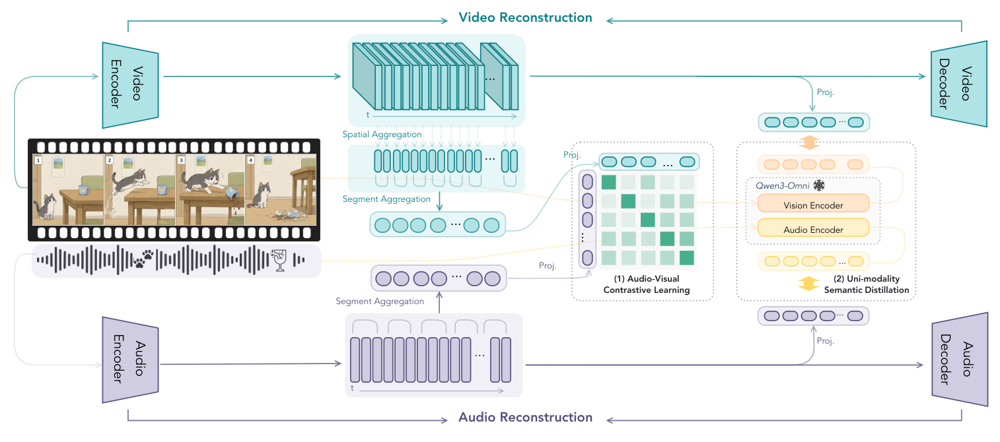
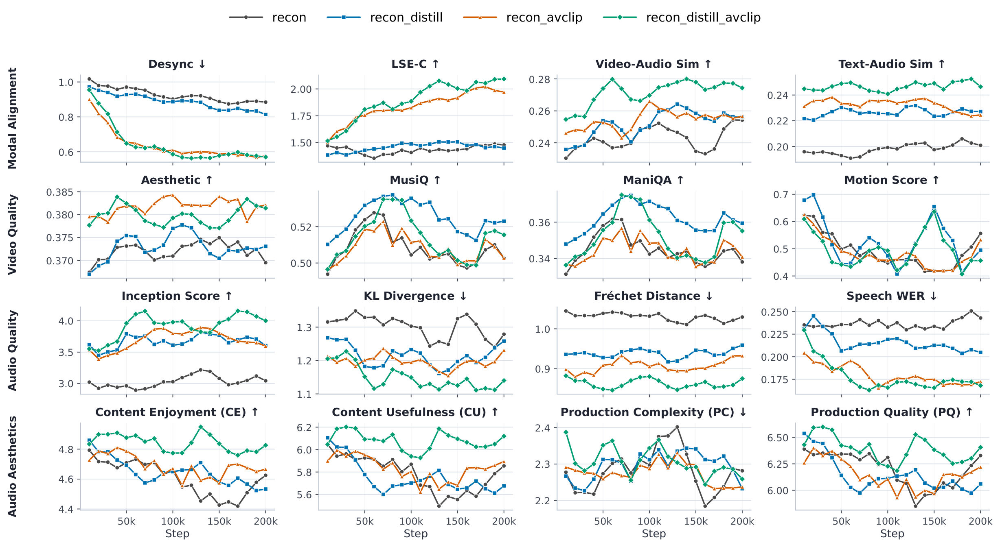

Abstract
Aligned, semantically structured latents for joint generation
Recent generative models are moving beyond silent video or standalone audio synthesis toward the joint generation of synchronized audio and video. Most existing systems use audio and video VAEs trained separately, leaving the downstream generator to learn cross-modal synchronization from scratch.
OmniVAE is a jointly trained audio-video VAE that learns fine-grained semantic alignment between audio and video latent representations. A segment-level audio-video contrastive objective captures temporal-semantic correspondence, while semantic features from pretrained modality-specific encoders are distilled into each branch to improve downstream learnability. Both objectives are training-only and add no inference cost. Experiments show improved latent-space probing, generation quality, and synchronization in downstream text-to-audio-video generation.
Method
Separate codecs, explicitly aligned latent spaces
OmniVAE preserves modality-specific reconstruction while making audio and video latents easier to model individually and jointly.
{kind=link}

Modality-specific VAEs
The video branch uses a Wan2.2 VAE backbone with 4× temporal and 8× spatial downsampling. The audio branch uses a DAC-style continuous VAE for 48 kHz waveforms. Their encoders and decoders remain independent and can be deployed jointly or separately.
Segment-level audio-video alignment
Eight-second clips are divided into 48 aligned temporal segments. A bidirectional InfoNCE loss contrasts each positive pair against intra-clip, sibling-clip, and cross-video negatives, embedding fine-grained temporal correspondence in both latents.
Modality-specific semantic distillation
Frozen Qwen3-Omni vision and audio encoders provide semantic supervision. Lightweight projectors align VAE latents to teacher features with a sigmoid-cosine objective, improving each latent space without requiring cross-modal input.
Training and downstream generation
Training progresses from independent reconstruction pretraining to joint alignment and distillation, followed by audio-decoder refinement. A frozen OmniVAE then tokenizes data for a bridged audio-video flow-matching model used to evaluate joint generation.
Results
Cross-modal alignment improves downstream joint generation
Results below reproduce the paper's T2AV generation, reconstruction, and audio-video sync probing evaluations.
01 · Text-to-Audio-Video Generation
Verse-Bench T2AV evaluation
Models trained with AVCLIP consistently improve temporal and semantic alignment. Combining AVCLIP with semantic distillation gives the strongest overall audio performance and cross-modal alignment.

all.pdf.
Cross-Modal Alignment
| Configuration | DeSync ↓ | LSE-C ↑ | V-A Sim ↑ | T-A Sim ↑ |
|---|---|---|---|---|
| Recon | 0.884 | 1.479 | 0.254 | 0.201 |
| Recon + Distill | 0.814 | 1.450 | 0.256 | 0.227 |
| Recon + AVCLIP | 0.576 | 1.970 | 0.257 | 0.225 |
| OmniVAE | 0.570 | 2.093 | 0.274 | 0.246 |
Video Quality
| Configuration | Aesthetic ↑ | MusiQ ↑ | ManiQA ↑ | Motion ↑ |
|---|---|---|---|---|
| Recon | 0.369 | 0.503 | 0.338 | 0.556 |
| Recon + Distill | 0.373 | 0.523 | 0.359 | 0.495 |
| Recon + AVCLIP | 0.382 | 0.503 | 0.341 | 0.533 |
| OmniVAE | 0.381 | 0.515 | 0.355 | 0.456 |
Audio Quality
| Configuration | IS ↑ | KL ↓ | FD ↓ | WER ↓ |
|---|---|---|---|---|
| Recon | 3.041 | 1.279 | 1.029 | 0.243 |
| Recon + Distill | 3.604 | 1.258 | 0.959 | 0.205 |
| Recon + AVCLIP | 3.598 | 1.231 | 0.932 | 0.172 |
| OmniVAE | 4.001 | 1.140 | 0.875 | 0.168 |
AudioBox Aesthetics
| Configuration | CE ↑ | CU ↑ | PC ↓ | PQ ↑ |
|---|---|---|---|---|
| Recon | 4.625 | 5.855 | 2.282 | 6.328 |
| Recon + Distill | 4.533 | 5.677 | 2.232 | 6.060 |
| Recon + AVCLIP | 4.666 | 5.894 | 2.237 | 6.219 |
| OmniVAE | 4.826 | 6.119 | 2.259 | 6.406 |
Table 4. Mean over checkpoints 180k, 190k, and 200k with CFG = 5. LSE-C is evaluated on face-detectable Set3 samples. CE, CU, PC, and PQ denote Content Enjoyment, Content Usefulness, Production Complexity, and Production Quality.
02 · Reconstruction
Reconstruction quality is largely preserved
Alignment and semantic objectives keep video reconstruction close to the reconstruction-only baseline. OmniVAE also remains competitive across speech, general audio, and music benchmarks.
Video Reconstruction · UCF-101 / Panda-70M
| Configuration | PSNR ↑ | SSIM ↑ | LPIPS ↓ | L1 ↓ | rFVD ↓ |
|---|---|---|---|---|---|
| External VAEs | |||||
| Wan2.1 VAE | 34.50 / 32.62 | 0.9510 / 0.9448 | 0.0201 / 0.0169 | 0.0117 / 0.0130 | 2.46 / 1.49 |
| Wan2.2 VAE | 34.87 / 33.21 | 0.9584 / 0.9541 | 0.0177 / 0.0137 | 0.0110 / 0.0120 | 3.72 / 1.38 |
| Ours | |||||
| Recon | 36.93 / 36.56 | 0.9656 / 0.9697 | 0.0102 / 0.0067 | 0.0090 / 0.0086 | 2.40 / 1.25 |
| Recon + Distill | 36.70 / 36.22 | 0.9649 / 0.9688 | 0.0107 / 0.0071 | 0.0092 / 0.0089 | 2.53 / 1.26 |
| Recon + AVCLIP | 36.22 / 35.13 | 0.9616 / 0.9631 | 0.0115 / 0.0079 | 0.0097 / 0.0098 | 2.66 / 1.35 |
| OmniVAE | 36.27 / 35.24 | 0.9616 / 0.9632 | 0.0113 / 0.0077 | 0.0097 / 0.0098 | 2.81 / 1.31 |
Audio Reconstruction · Speech and Audio / Music
| Model | SIM ↑ | STOI ↑ | P-NB ↑ | P-WB ↑ | Mel ↓ | STFT ↓ | ViSQOL ↑ |
|---|---|---|---|---|---|---|---|
| External VAEs | |||||||
| HunyuanVideo-Foley VAE | 0.9899 | 0.9979 | 4.4780 | 4.5337 | 0.52 / 0.60 | 1.82 / 1.84 | 4.47 / 4.45 |
| MMAudio VAE | 0.9122 | 0.9502 | 3.4931 | 2.9797 | 1.23 / 1.36 | 2.14 / 2.44 | 4.42 / 4.42 |
| Stable Audio 3 SAME-S | 0.7960 | 0.9139 | 2.8073 | 2.2991 | 1.46 / 1.37 | 3.19 / 3.67 | 3.68 / 3.99 |
| Stable Audio 3 SAME-L | 0.8755 | 0.9539 | 3.4615 | 3.0739 | 1.37 / 1.22 | 3.30 / 3.55 | 3.76 / 4.17 |
| Ours | |||||||
| Recon | 0.9893 | 0.9981 | 4.4916 | 4.5557 | 0.44 / 0.50 | 1.75 / 1.72 | 4.55 / 4.60 |
| Recon + Distill | 0.9893 | 0.9970 | 4.4453 | 4.5101 | 0.56 / 0.64 | 1.96 / 1.95 | 4.44 / 4.42 |
| Recon + AVCLIP | 0.9666 | 0.9946 | 4.4346 | 4.3638 | 0.76 / 0.75 | 1.99 / 2.03 | 4.03 / 4.18 |
| OmniVAE | 0.9737 | 0.9948 | 4.4400 | 4.4085 | 0.74 / 0.73 | 2.02 / 2.08 | 4.08 / 4.31 |
Table 2. Video values are UCF-101 / Panda-70M; Audio / Music values are AudioSet / MUSDB18. Speech metrics use LibriSpeech test-clean.
03 · Audio-Video Sync Probing
Contrastive learning drives temporal alignment
A lightweight probe predicts one of 21 audio offsets from −2 to +2 seconds on VGGSound-Sparse. OmniVAE performs best with frozen representations and when the contrastive aggregators are fine-tuned.
| Protocol | Method | A@1 | A@5 | A@1tol |
|---|---|---|---|---|
| Frozen | Recon | 6.4 | 31.5 | 16.2 |
| Recon + Distill | 7.1 | 33.0 | 17.5 | |
| Recon + AVCLIP | 18.1 | 47.8 | 34.5 | |
| OmniVAE | 20.2 | 50.1 | 37.2 | |
| +ft | Recon + ft | 7.0 | 32.4 | 17.1 |
| Recon + Distill + ft | 7.8 | 33.9 | 18.4 | |
| Recon + AVCLIP + ft | 21.8 | 52.4 | 39.6 | |
| OmniVAE + ft | 22.3 | 53.2 | 40.4 |
Table 3. Sync probing on VGGSound-Sparse (%). A@1tol uses ±1-class tolerance; +ft also tunes the contrastive aggregators.
Qualitative Comparisons
Paired T2AV cases across Verse-Bench subsets.
The examples below are selected from Set1, Set2, and Set3-medium; each row compares the same prompt generated with the reconstruction-only VAE and with the full OmniVAE configuration (Recon + Distill + AVCLIP). Unless marked with ↓, higher metric values are better.
Set1
Non-talking or non-speech-leaning samples with strong synchronization gains.
Set1 / 0073
"The orioles are singing on the island in the river. A beautiful lady is the ideal match for the gentleman."
| Metric | Recon | OmniVAE | Gain |
|---|---|---|---|
| Sync score ↑ | 0.10 | 2.00 | +1.90 |
| Video AS ↑ | 0.490 | 0.525 | +0.035 |
| DNSMOS ↑ | 3.60 | 3.91 | +0.31 |
| Speech WER ↓ | 0.150 | 0.100 | 0.050 lower |
| Audio PQ ↑ | 7.17 | 7.22 | +0.05 |
Set1 / 0109 · music
Intimate piano performance in a small studio.
| Metric | Recon | OmniVAE | Gain |
|---|---|---|---|
| Sync score ↑ | 0.20 | 2.00 | +1.80 |
| Audio-text CLAP ↑ | 0.001 | 0.124 | +0.123 |
| DNSMOS ↑ | 2.33 | 2.63 | +0.30 |
Set1 / 0219 · cooking
Close-up culinary plating with tactile kitchen sounds.
| Metric | Recon | OmniVAE | Gain |
|---|---|---|---|
| Sync score ↑ | 0.20 | 2.00 | +1.80 |
| Video AS ↑ | 0.334 | 0.458 | +0.125 |
| Audio-text CLAP ↑ | 0.062 | 0.320 | +0.258 |
| DNSMOS ↑ | 2.20 | 2.64 | +0.44 |
| PE-TAV ↑ | 2.70 | 3.44 | +0.74 |
Set2
Longer spoken prompts where aligned latents improve synchronization and audio fidelity.
Set2 / 10000344
"Long time ago, every year when I watch Oscar with my..."
| Metric | Recon | OmniVAE | Gain |
|---|---|---|---|
| Sync score ↑ | 0.10 | 1.90 | +1.80 |
| Video AS ↑ | 0.493 | 0.517 | +0.024 |
| Audio-text CLAP ↑ | 0.263 | 0.294 | +0.032 |
| DNSMOS ↑ | 3.83 | 4.00 | +0.18 |
| Audio FD ↓ | 0.749 | 0.498 | 0.252 lower |
Set2 / 10000292
"It was great. I have great relationships with Mexico, with the Mexican people."
| Metric | Recon | OmniVAE | Gain |
|---|---|---|---|
| Sync score ↑ | 0.60 | 1.90 | +1.30 |
| Video AS ↑ | 0.341 | 0.364 | +0.023 |
| Audio-text CLAP ↑ | 0.308 | 0.344 | +0.036 |
| DNSMOS ↑ | 3.71 | 3.85 | +0.14 |
| Speech WER ↓ | 0.077 | 0.000 | 0.077 lower |
Set2 / 10000519
Formal conference presentation with a single speaker.
| Metric | Recon | OmniVAE | Gain |
|---|---|---|---|
| Sync score ↑ | 0.50 | 1.90 | +1.40 |
| Audio-text CLAP ↑ | 0.359 | 0.367 | +0.007 |
| DNSMOS ↑ | 3.12 | 3.59 | +0.47 |
| Audio FD ↓ | 1.132 | 1.013 | 0.120 lower |
| Audio PQ ↑ | 5.81 | 6.72 | +0.91 |
Set3-medium
Face-centric samples with valid lip-sync evaluation and high audio quality.
Set3-medium / 1006
"Wouldn't it be great if there was a way to meet that demand by simply wasting less of what we're already mining?"
| Metric | Recon | OmniVAE | Gain |
|---|---|---|---|
| Sync score ↑ | 0.00 | 1.90 | +1.90 |
| Video AS ↑ | 0.384 | 0.433 | +0.050 |
| Audio-text CLAP ↑ | 0.232 | 0.271 | +0.039 |
| DNSMOS ↑ | 3.65 | 3.75 | +0.09 |
| Audio PQ ↑ | 6.42 | 7.02 | +0.60 |
Set3-medium / 1032
"So in order to understand how to actually achieve this, we have to look at cement in a little bit more detail."
| Metric | Recon | OmniVAE | Gain |
|---|---|---|---|
| Sync score ↑ | 0.90 | 2.00 | +1.10 |
| LSE-C ↑ | 0.51 | 2.04 | +1.53 |
| Video AS ↑ | 0.386 | 0.440 | +0.054 |
| Audio-text CLAP ↑ | 0.166 | 0.186 | +0.020 |
| PE-TAV ↑ | 3.53 | 3.60 | +0.07 |
Set3-medium / 1045
"But in reality, I started it because I was traumatized, and I didn't want anyone to go through what I had been through."
| Metric | Recon | OmniVAE | Gain |
|---|---|---|---|
| Sync score ↑ | 0.90 | 2.00 | +1.10 |
| LSE-C ↑ | 1.35 | 2.79 | +1.45 |
| DNSMOS ↑ | 3.42 | 3.58 | +0.16 |
| Speech WER ↓ | 0.087 | 0.000 | 0.087 lower |
| Audio PQ ↑ | 5.12 | 6.67 | +1.55 |
Resources
Paper, code, and model release
The repository provides OmniVAE training, reconstruction, generation, and evaluation code. Released checkpoints and evaluation assets are hosted on Hugging Face.
Citation
BibTeX
@article{zhan2026omnivae,
title = {OmniVAE: An Audio-Video VAE with Cross-Modal Alignment for Joint Generation},
author = {Zhan, Jun and Yang, Chen and Gong, Yitian and Yu, Donghua and Chen, Kuangwei and Zhang, Wenbo and Huang, Kexin and Luo, Qi and Xu, Zhe and Zhu, Ying and Wang, Jin and Zhang, Tengyue and Chen, Qi and Chang, Cheng and Wang, Songlin and Dai, Junqi and Ye, Jiasheng and Yang, Xiaogui and Liang, Tianyi and Peng, Xiangyu and Fei, Zhaoye and Li, Shimin and Cheng, Qinyuan and Chen, Xie and Chen, Xinchi and Qiu, Xipeng},
year = {2026},
url = {https://github.com/OpenMOSS/OmniVAE}
}